Gestione Soste – Collaboratore
Il portale delle Smart Guide è uno spazio digitale che raccoglie risorse pratiche e aggiornate in un unico ambiente intuitivo. Strumenti chiari e organizzati per organizzarti e trovare subito ciò che ti serve.
01.
Creazione sosta
Panoramica sulla creazione e gestione della Sosta, dall'inserimento dei dati al salvataggio della stessa.
Punti di accesso alla creazione
La creazione di una nuova sosta avviene:
Menu a tendina
Cliccando sulla voce "Gestione e consultazione" viene visualizzato un menu a tendina, da cui è possibile accedere alla voce "Soste", al cui interno è presente il pulsante di creazione.
Dalla dashboard è possibile creare nuove soste cliccando "Crea nuova sosta".
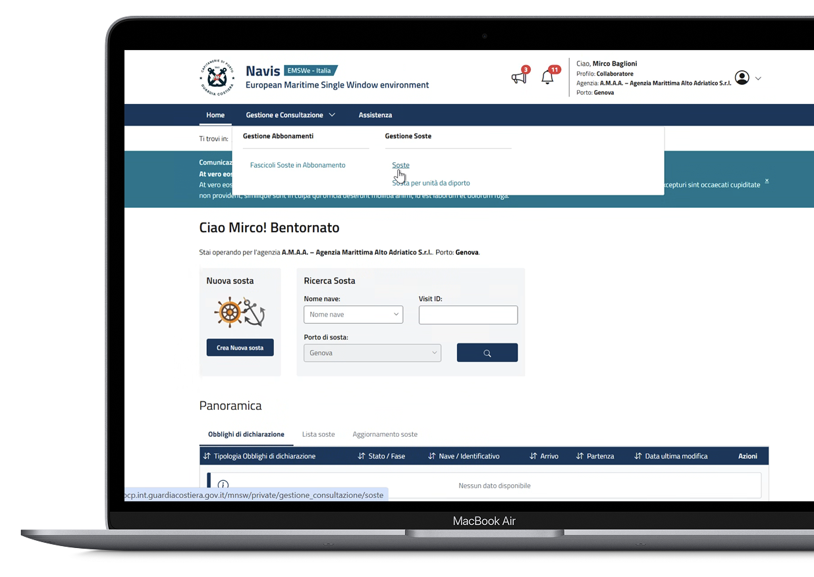
Creazione sosta
Passaggi per creare una nuova sosta
Dopo aver cliccato il pulsante "Nuova sosta", seguire tutti i passaggi indicati a sistema e inserire le informazioni necessarie per cominciare l'iter di creazione di una nuova sosta.
Ricerca tramite uno dei parametri visualizzati
Ricercare la nave tramite uno dei campi visualizzati a sistema: Nome Nave, IMO, MMSI o Call Sign. In questo caso selezionare il "Nome Nave".
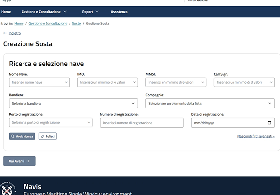
Ricerca della nave
Selezionare una dei parametri mostrati come "Nome Nave". Successivamente avvia la ricerca cliccando "Avvia Ricerca".
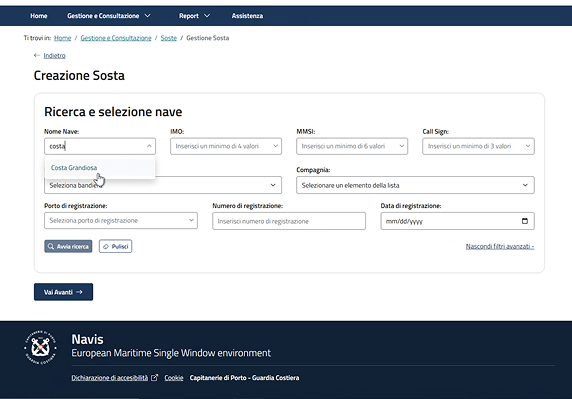
Selezione nave e conferma
I risultati vengono visualizzati tramite una vista tabellare, selezionare una nave e cliccare "Vai avanti" per cominciare la creazione.

Creazione sosta
Step di creazione di una nuova Sosta
Per creare una nuova sosta, procedere seguendo i passaggi sottostanti:
Dati generali
Informazioni aggiuntive
Riepilogo sosta
Consente di inserire le informazioni generali, quali: Porto di sosta (con ETA e ETD), Porto Precedente (con ETD) e Porto successivo (con ETA).

Consente di inserire informazioni aggiuntive utili a definire meglio la sosta, quali: Servizi Tecnico Nautici in Arrivo, Bunkeraggio, Trasporto Passeggeri, Trasporto Merci e Operazioni di Allibo.

Consente di visualizzare il riepilogo delle informazioni inserite negli step precedenti e procedere al salvataggio della sosta.

Creazione di una nuova Sosta
Dati generali
DATI GENERALI
INFORMAZIONI AGGIUNTIVE
RIEPILOGO SOSTA
Visualizzazione nave selezionata
In questo step è possibile inserire le informazioni generali relative alla sosta, ai porti ed alle date di partenza e arrivo.

Inserimento dati generali e possibili errori
Inserire le informazioni generali, quali: Porto di sosta (con ETA e ETD), Porto Precedente (con ETD) e Porto successivo (con ETA). Nel caso in cui i dati inseriti non siano corretti, il sistema informa l'utente tramite un alert e non consente di procedere allo step successivo.
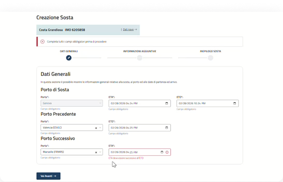
Revisione e conferma
Verificato il corretto inserimento dei dati inseriti, selezionare il pulsante "Vai avanti" per procedere allo step successivo.

In caso di incongruenze tra le date di arrivo e partenze tra i vari porti, il sistema informerà l'utente tramite messaggi di errore posizionati sotto i campi compilati in modo errato e tramite alert informativi.
Creazione di una nuova Sosta
Informazioni aggiuntive
DATI GENERALI
INFORMAZIONI AGGIUNTIVE
RIEPILOGO SOSTA
Visualizzazione delle informazioni aggiuntive
Il sistema dà la possibilità di inserire una serie di informazioni aggiuntive utili a definire meglio la sosta e a pre-popolare l'elenco degli Obblighi di Dichiarazione.
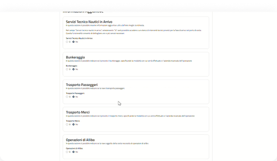
Aggiunta e modifica delle informazioni
L'utente può aggiungere e successivamente modificare informazioni aggiuntive quali: Servizi Tecnico Nautici in Arrivo, Bunkeraggio, Trasporto Passeggeri, Trasporto Merci e Operazioni di Allibo.
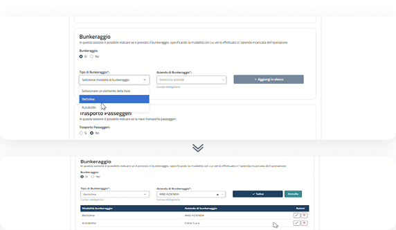
Verifica e step successivo
Dopo aver selezionato le informazioni aggiuntive, cliccare su "Vai avanti" per proseguire allo step finale.

Creazione di una nuova Sosta
Inserimento informazioni aggiuntive
DATI GENERALI
INFORMAZIONI AGGIUNTIVE
RIEPILOGO SOSTA
Dopo aver selezionato "Sì", scegliere una o più tipologie di servizio.

Dopo aver selezionato le tipologia di servizio cliccare "Aggiungi in elenco".

La tipologia aggiunta può essere eliminata tramite l'"icona del cestino".

Selezionare una o più tipologie e aziende, quindi cliccare "Aggiungi in elenco".

È possibile modificare o eliminare tramite gli appositi pulsanti.

Dopo aver modificato, cliccare il pulsante "Salva" o "Annulla".
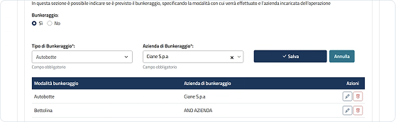
Creazione di una nuova Sosta
Riepilogo sosta
DATI GENERALI
INFORMAZIONI AGGIUNTIVE
RIEPILOGO SOSTA
Informazioni e azioni disponibili
All'interno del dettaglio della sosta è possibile salvare in bozza cliccando il pulsante "Salva in bozza".
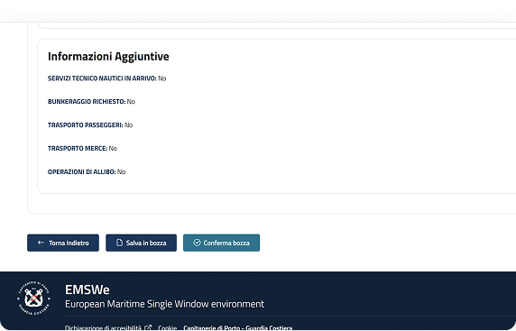
Salvataggio in bozza della sosta
È possibile salvare la sosta in bozza; dopo aver confermato l'operazione tramite una finestra che apparirà sullo schermo, la sosta assumerà lo stato "Bozza".
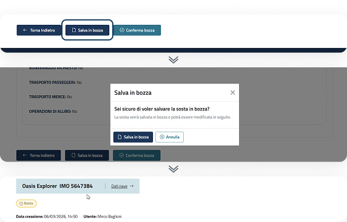
Conferma bozza della sosta
È possibile confermare la bozza della sosta; dopo aver confermato l'operazione tramite una finestra che apparirà sullo schermo, la sosta assumerà lo stato "Bozza Pronta".
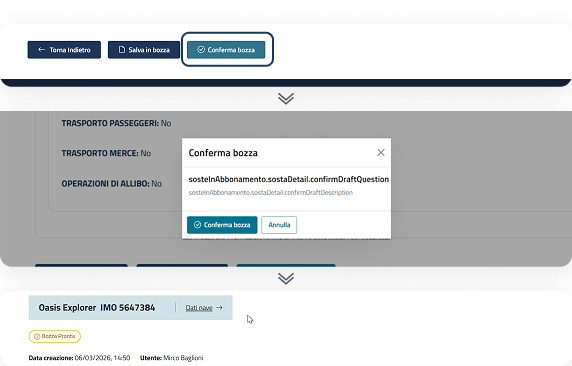
02.
Ricerca e consultazione di una sosta
Una panoramica sui flussi di ricerca e consultazione delle Soste.
Punti di accesso per la ricerca soste
La ricerca di una sosta avviene:
Menu a tendina
Cliccando sulla voce "Gestione e consultazione" viene visualizzato un menu a tendina, da cui è possibile accedere alla voce "Soste", al cui interno è possibile ricercare le soste presenti a sistema.
Dalla dashboard, è possibile ricercarle attraverso l'apposita sezione: "Ricerca sosta".
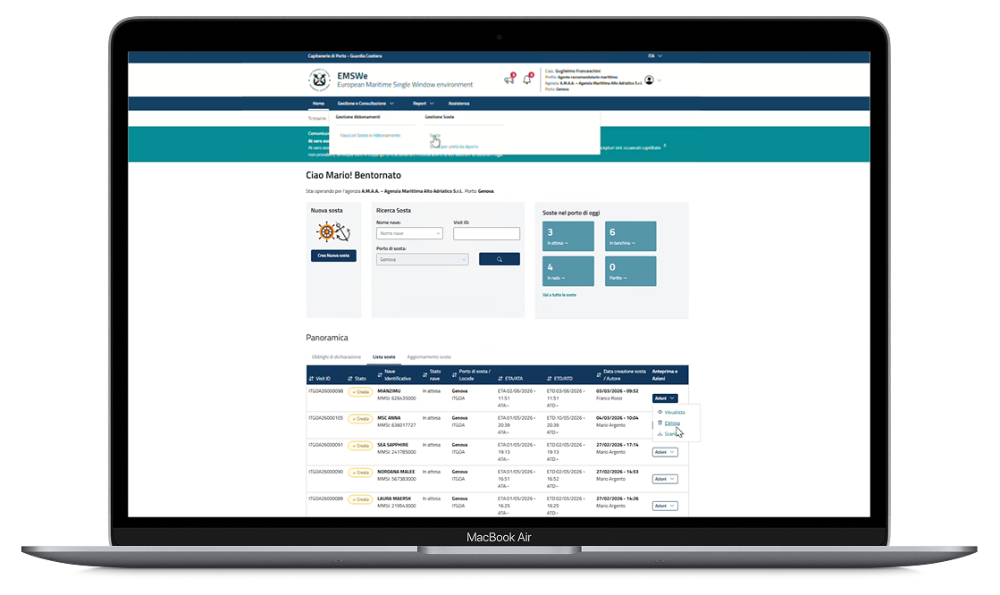
Nella sezione Panoramica, nella voce "Lista soste" sarà presente l'elenco delle soste.
Ricerca e consultazione di una sosta: lista soste
Funzionalità in pagina
Accedendo alla sezione "Lista soste", il sistema mostra i filtri di ricerca disponibili, sia di base sia avanzati. Dopo aver selezionato i criteri desiderati e cliccato su "Cerca", i risultati vengono visualizzati in forma tabellare.
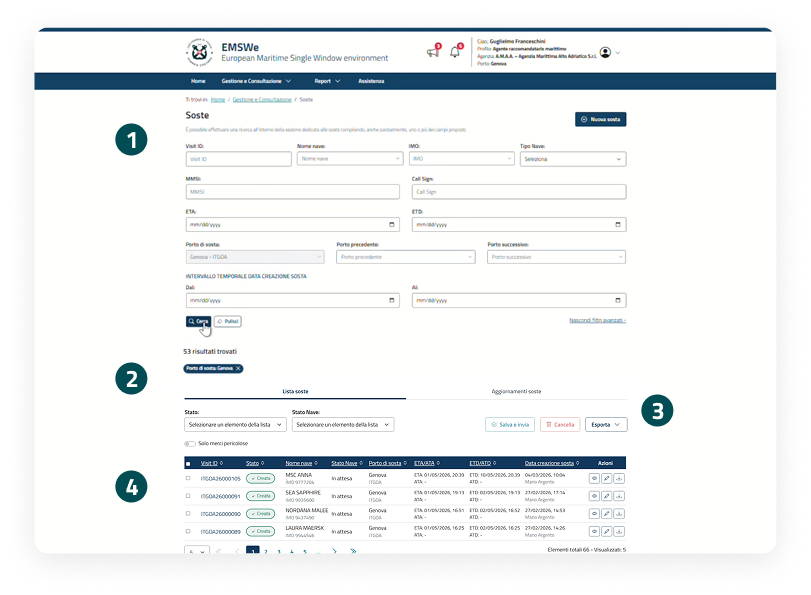
Sezione Filtri
La sezione Filtri consente di ricercare le soste secondo diversi criteri. Sono disponibili filtri base e filtri avanzati per affinare la ricerca.
Visualizzazione di "Lista soste" o "Aggiornamento soste"
È possibile scegliere di visualizzare i risultati di ricerca della lista soste e degli aggiornamenti delle soste.
Filtri e azioni sulla tabella
I risultati della ricerca possono essere filtrati per "Attività" e "Stato Attività". Selezionando una o più soste è possibile cancellare, Confermare bozza ed esportare. Infine, per "Lista soste", sarà possibile visualizzare solo le soste aventi merci pericolose tramite l'apposito pulsante.
Visualizzazione soste tramite tabella
I risultati della ricerca vengono presentati in una tabella, mostrando le informazioni e azioni principali.
Focus sull'azione di visualizzazione delle merci pericolose (Lista soste)
È possibile visualizzare o nascondere le merci pericolose tramite l'interazione con il pulsante evidenziato.
Di default il pulsante sarà disattivato, saranno visualizzate tutte le soste.
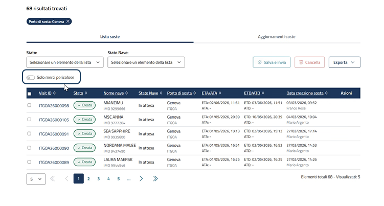
Se il pulsante è attivo, saranno mostrate solo le soste per quelle navi che dichiarano di trasportare merci pericolose.
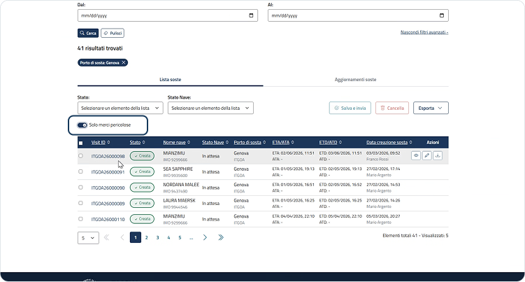
Visualizzazione risultati in tabella: Lista Soste e Aggiornamento soste
I risultati di ricerca delle soste, possono essere visualizzati tramite tabella secondo due modalità:
Lista Soste
È l'elenco di tutte le soste presenti a sistema, create dall'utente che ha effettuato l'accesso, sulle quali è possibile accedere al dettaglio e svolgere diverse azioni.

Aggiornamenti soste
È un elenco di attività che l'utente deve svolgere per gestire eventuali richieste di rettifica sosta o richieste di integrazioni di Obblighi di Dichiarazione. Sarà possibile filtrare i risultati in tabella per "Attività" e "Stato Attività".
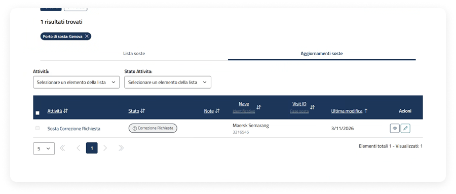
Ricerca e consultazione Sosta
Dettaglio della sosta
All'interno della pagina sono consultabili le seguenti informazioni:
- Informazioni sosta
- Informazioni aggiuntive
- Obblighi di dichiarazione
- Comunicazioni
- Controlli frontiera
- Merci
- Rifiuti
- Sicurezza
- FAL
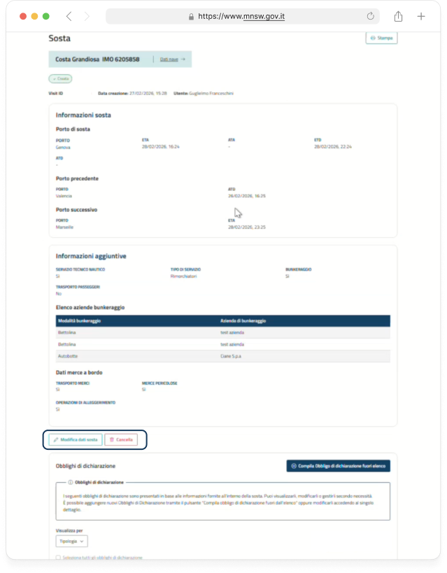
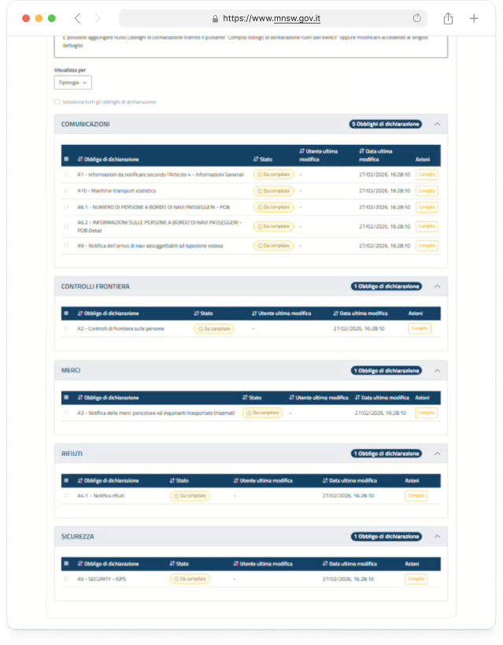
Possibili azioni secondarie sulla richiesta:
Ricerca e consultazione Sosta
Focus Obblighi di Dichiarazione
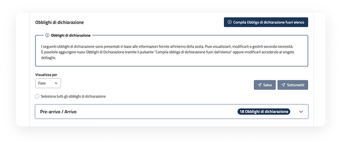
Visualizzazione per fase o tipologia
All'interno della sezione di Obblighi di Dichiarazione è possibile visualizzare questi ultimi per "Fase" o "Tipologia".
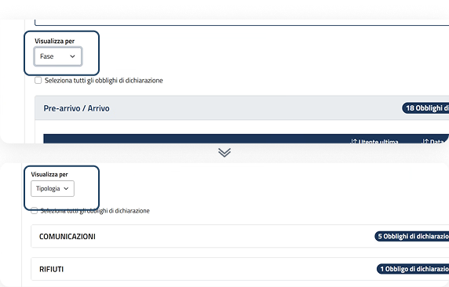
Visualizzazione tramite accordion
L'elenco degli Obblighi di Dichiarazione è visualizzato tramite sezioni accordion, che inizialmente sono aperte.
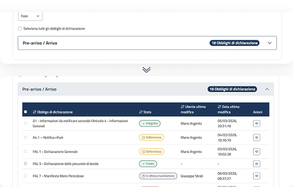
Azioni disponibili
Dopo aver selezionato uno o più Obblighi di Dichiarazione, selezionandoli da checkbox è possibile confermare la bozza. È inoltre possibile accedere al dettaglio degli obblighi di dichiarazione con l'icona dell'occhio o compilare con il pulsante "Compila".
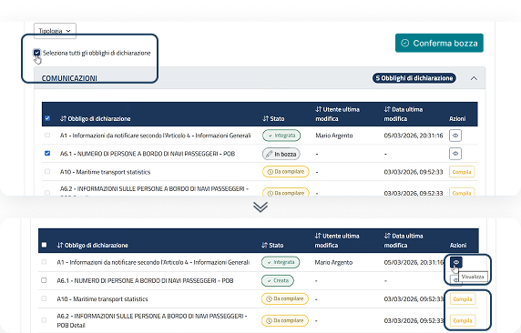
Ricerca e consultazione Sosta
Focus Obblighi di Dichiarazione
Azione sul pulsante
All'interno della sezione di Obblighi di Dichiarazione è possibile aggiungere alla lista altri Obblighi di Dichiarazione fuori elenco tramite l'apposito pulsante.
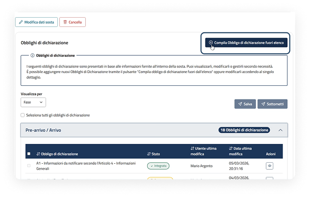
Selezione Obblighi di Dichiarazione
L'elenco degli Obblighi di Dichiarazione è visualizzato tramite menu a tendina, selezionare uno o più dichiarazioni tramite checkbox.
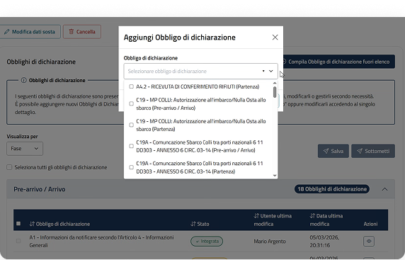
Aggiungi Obblighi di Dichiarazione
Una volta selezionati gli Obblighi di Dichiarazione, cliccare il pulsante "Aggiungi" per inserirli nell'elenco.

03.
Valutazione richiesta di rettifica
Di seguito una panoramica sulle azioni disponibili per la valutazione di una richiesta di rettifica di una sosta.
Punti di Accesso per la valutazione di una richiesta di rettifica
Lista attività dalla dashboard
È possibile accedere al dettaglio della sosta tramite le azioni disponibili per ciascuna attività presente in dashboard nel tab Aggiornamento soste.
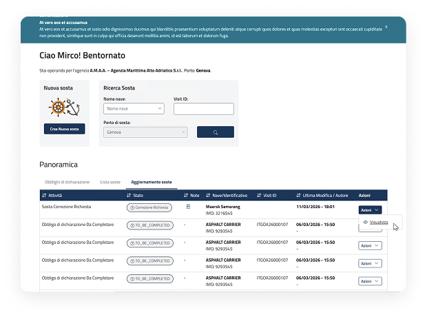
Notifiche
Attraverso la sezione delle notifiche è possibile visualizzare e accedere al dettaglio della sosta e richiedere la rettifica al collaboratore.
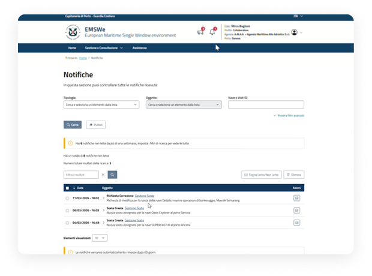
Ricerca sosta
Nell'elenco dei risultati della soste è possibile accederne al dettaglio e modificare per richiedere la rettifica al collaboratore.
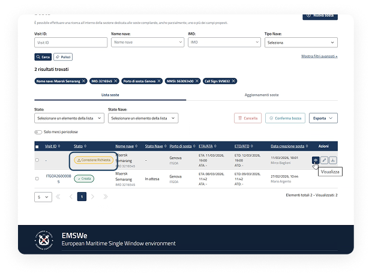
Valutazione richiesta di rettifica
Passaggi di valutazione rettifica
Dopo aver fatto l'accesso al dettaglio della sosta, seguire tutti i passaggi indicati per valutare la richiesta di rettifica dell'Agente:
Stato della sosta e avvio della modifica
All'interno del dettaglio la sosta è nello stato "Correzione richiesta". Per modificare cliccare il pulsante "Modifica dati sosta".
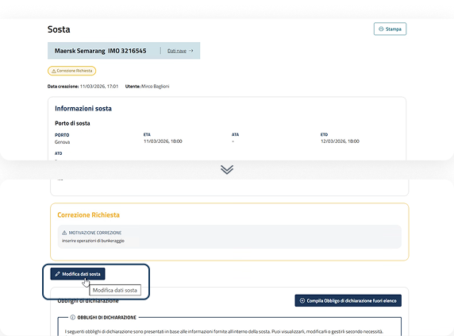
Modificare i dati
All'interno degli step guidati, apportare le modifiche necessarie per aggiornare i dati, come "Trasporto Merci" o "Operazioni di Allibo".
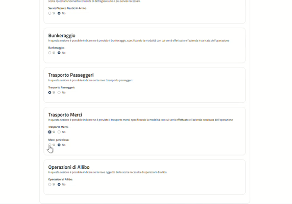
Riepilogo e salva modifica
Dopo aver modificato i dati della sosta, all'interno del dettaglio cliccare il pulsante "Salva modifiche" per salvare.
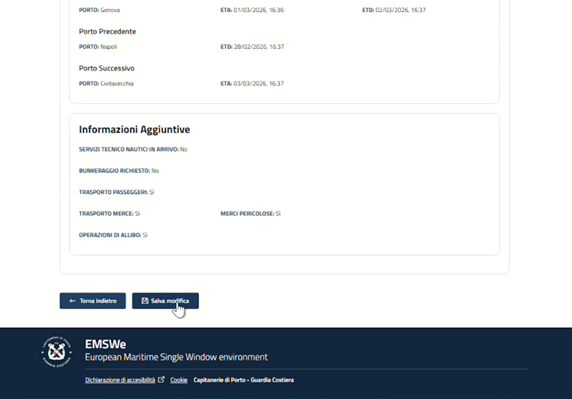
Finestra di successo
Il sistema mostra una finestra in cui comunica all'utente che la sosta è stata salvata con successo.
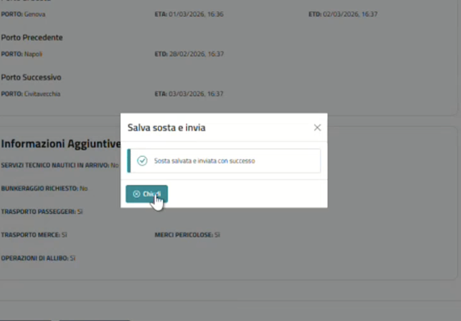
Dettaglio e cambio stato
Dopo aver modificato la sosta, all'interno del dettaglio della stessa lo stato passa in "Bozza pronta".
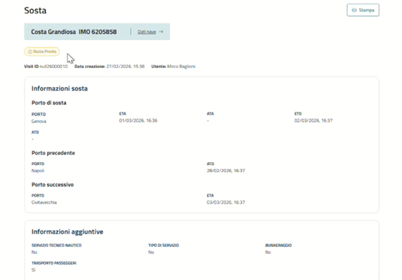
Azioni disponibili
All'interno del dettaglio della sosta, le azioni disponibili saranno "Modifica dati di sosta" e "Cancella".
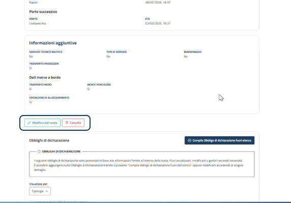
04.
Proposta modifica
Di seguito una panoramica sul flusso di proposta di modifica di una sosta.
Punto di avvio del flusso di proposta di Modifica
Il collaboratore può proporre la modifica della sosta solo quando quest'ultima si trova nello stato "Aperta".
Ricerca della sosta
Nell'elenco risultati della ricerca delle soste è possibile accedere al dettaglio della sosta tramite l'icona dell'"occhio".
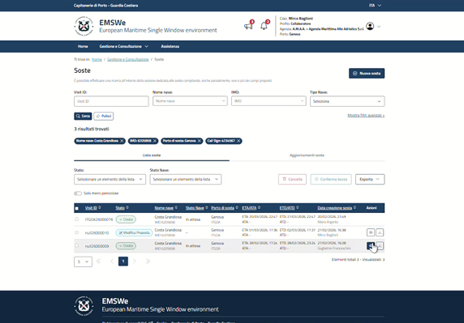
Dettaglio e stato
All'interno del dettaglio della sosta, oltre alle varie informazioni verrà visualizzato lo stato "Aperta".

Pulsante di proposta modifica
Per avviare il flusso di proposta di eliminazione cliccare sul pulsante "Proposta modifica".
Proposta di Modifica
Avvio workflow proposta di modifica
Il collaboratore può proporre la modifica della sosta solo quando quest'ultima si trova nello stato "Aperta".
Dettaglio e avvio del flusso
All'interno del dettaglio, avviare il flusso di proposta di modifica cliccando l'apposito pulsante "Proposta modifica".
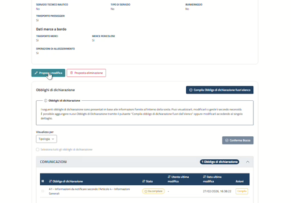
Dati generali (Step 1)
Il sistema avvia il processo di modifica a step della sosta. Dopo aver verificato e eventualmente modificato i dati generali cliccare il pulsante "Vai avanti".
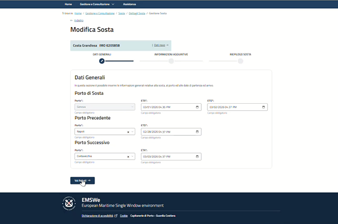
Modifica informazioni aggiuntive (Step 2)
Nel secondo step, decidere se modificare le informazioni aggiuntive, come il bunkeraggio, quindi procedere cliccando il pulsante "Vai avanti".
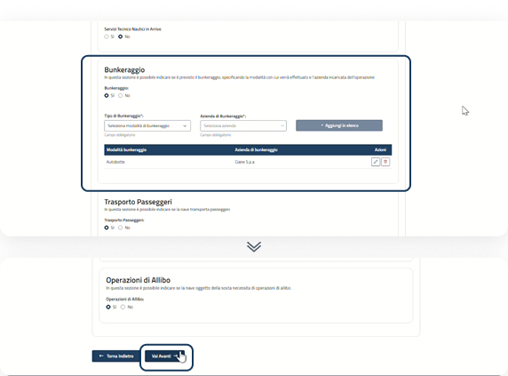
Dettaglio e salvataggio
Dopo avere verificato la corretta modifica dei dati negli step precedenti, cliccare il pulsante "Salva proposta Modifica" per procedere.
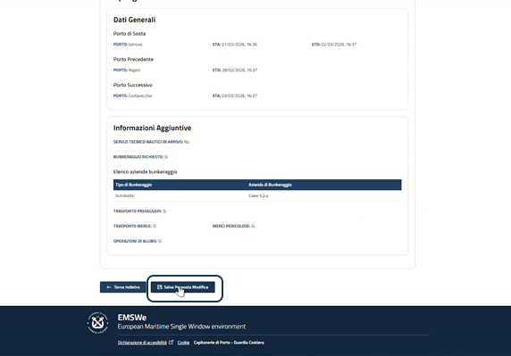
Motivazione e conferma
Il sistema mostra una finestra in cui inserire obbligatoriamente la motivazione della proposta di modifica; in seguito confermare.
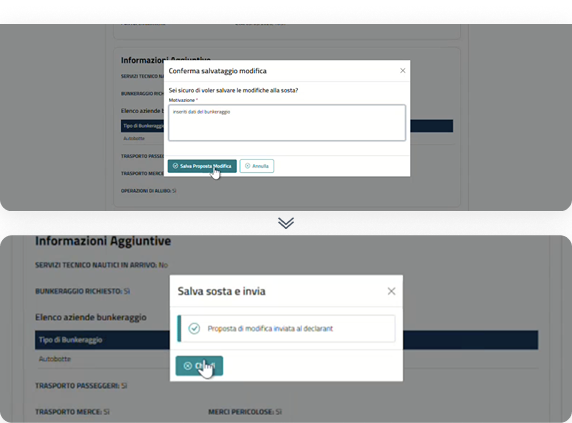
Dettaglio e cambio stato
Dopo aver inviato la proposta di modifica, all'interno del dettaglio della Sosta lo stato passa in "Modifica Proposta".
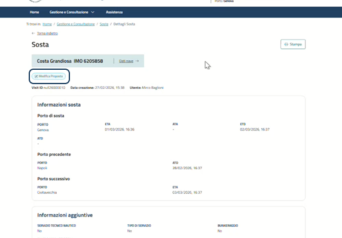
05.
Proposta eliminazione
Di seguito una panoramica sul flusso di proposta di eliminazione di una sosta.
Punto di avvio del flusso di proposta di Eliminazione
Il collaboratore può proporre l'eliminazione della sosta solo quando quest'ultima si trova nello stato "Aperta".
Ricerca della sosta
Nell'elenco risultati della ricerca delle soste è possibile accedere al dettaglio della sosta tramite l'icona dell'"occhio".

Dettaglio e stato
All'interno del dettaglio della sosta, oltre alle varie informazioni verrà visualizzato lo stato "Aperta".
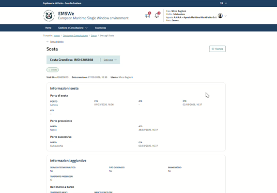
Pulsante di proposta eliminazione
Per avviare il flusso di proposta di eliminazione cliccare sul pulsante "Proposta eliminazione".
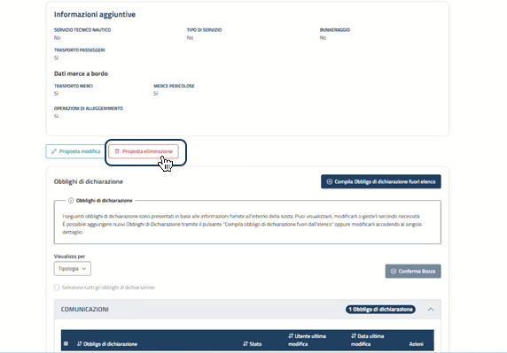
Proposta di Eliminazione
Avvio workflow proposta di eliminazione
Il collaboratore può proporre l'eliminazione della sosta solo quando quest'ultima si trova nello stato "Aperta".
Dettaglio e avvio del flusso
All'interno del dettaglio, avviare il flusso di proposta di eliminazione cliccando l'apposito pulsante "Proposta eliminazione".
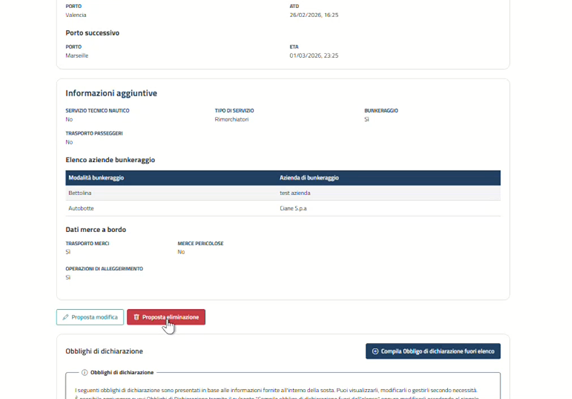
Motivazione e conferma
Il sistema mostra una finestra in cui inserire obbligatoriamente la motivazione della proposta di eliminazione; in seguito confermare.
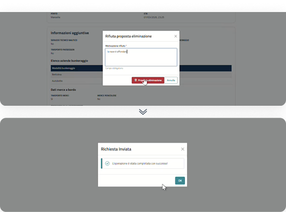
Dettaglio e cambio stato
Dopo aver inviato la proposta di eliminazione, all'interno del dettaglio della Sosta lo stato passa in "Eliminazione proposta".
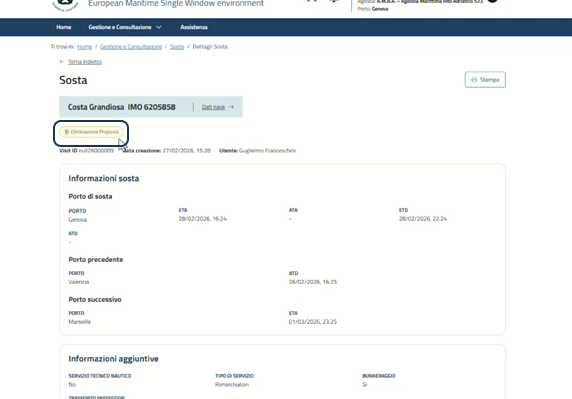